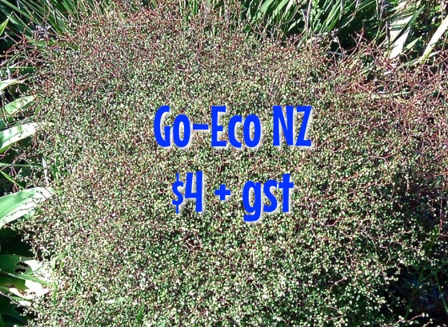

Go-Eco
Sustainable Solutions
Muehlenbeckia astonii
Hardy wiry bushes, symmetrical pincushions. Long lived plant. $4.50 +gst each, $4 each +gst for 10 (1 litre bags).
<< Back to Nursery

Muehlenbeckia astonii
grows into a symmetrical wiry rounded bush, 1m x 1m and flourishes in Northlands climate.